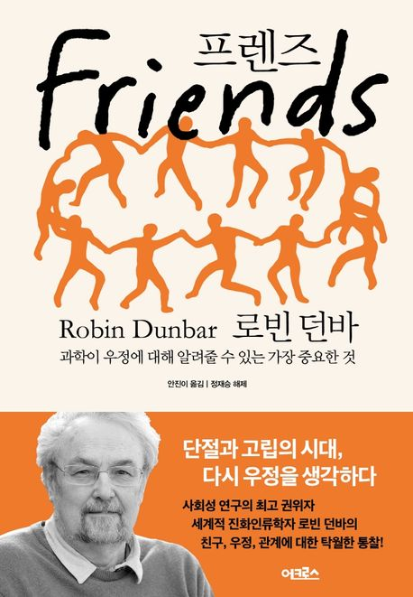
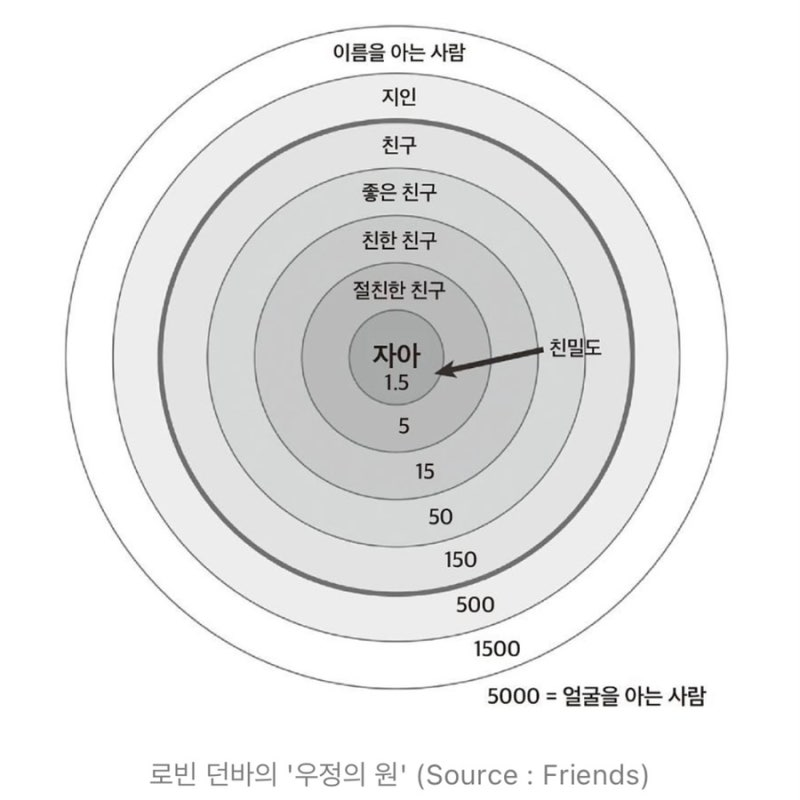

프렌즈 통합본
마인드맵 요약 폴더의 Markdown 파일을 파일명 오름차순으로 통합한 독서 노트입니다. 원문 순서와 내용을 보존하면서 읽기와 탐색을 위한 구조를 강화했습니다.
문서 정보와 통합 순서
이 문서는 마인드맵 요약 폴더의 Markdown 파일을 파일명 오름차순으로 통합한 것입니다.
- 0.프렌즈 마인드맵
- 00.프렌즈
- 1.프렌즈 핵심문제
- 2.프렌즈 중심 주장
- 3.프렌즈 주장근거
- 4.프렌즈 - 반복적 핵심개념
- 5.프렌즈 사례와 비유
- 6.프렌즈 비판&반대관점
- 7.프렌즈 결론&요구되는 변화
- 부록1 골든 센텐스
- 부록2 남여우정
- 부록3.프렌즈 - 기독교적 관점
0.프렌즈 마인드맵

00.프렌즈

1.프렌즈 핵심문제
1.로빈 던바의 《프렌즈》가 해결하고자 하는 핵심 문제는 막연하고 감정적인 영역으로 여겨지던 ‘우정’의 실체를 진화생물학, 뇌과학, 네트워크 과학의 관점에서 분석하여 “인간은 왜 친구를 필요로 하고, 어떻게 관계를 맺으며, 그 관계망의 한계와 본질은 무엇인가?”를 과학적으로 규명하는 것입니다.
이러한 큰 맥락 안에서 저자가 책을 통해 집중적으로 파고들며 해결하고자 하는 구체적인 세부 문제들은 다음과 같습니다.
1. 우정의 진화적 역설: 우리는 왜 이득 없는 관계에 시간과 노력을 쏟는가? 인간의 친구 관계는 동물들의 혈연관계나 전략적 협업과 달리 대개 생존이나 경제적 이득에 직접적인 도움이 되지 않으며, 오히려 시간과 돈 등 막대한 에너지를 소모해야 유지됩니다. 저자는 생존에 직결되지 않는 것처럼 보이는 이 ‘약한 유대 관계’와 ‘우정’에 인간이 왜 그토록 매달리는지, 그리고 그것이 실제로는 우리의 건강, 행복, 면역력, 수명에 얼마나 절대적인 생존 도구로 작용하는지를 증명함으로써 우정의 존재 이유를 해결하고자 합니다.
2. 사회적 네트워크의 인지적 한계: 친구의 수는 무한히 확장될 수 있는가? 저자가 평생의 연구를 통해 제기하고 풀어낸 가장 핵심적인 과학적 문제는 인간의 뇌 용량과 인지 능력이 사회적 관계의 규모를 어떻게 제약하는가입니다. 이를 설명하기 위해 저자는 동물의 뇌 크기가 사회 집단의 크기를 결정한다는 ‘사회적 뇌 가설(Social Brain Hypothesis)’을 도입합니다. 인간의 신피질 크기를 바탕으로 계산해 낸 인지적 한계치인 150명(던바의 수)이 어떻게 도출되었으며, 이 숫자가 고대 수렵-채집 사회부터 현대의 소셜 미디어 시대에 이르기까지 왜 변함없이 인간의 사회적 세계를 지배하는지를 논증합니다.
3. 관계의 유지 메커니즘과 신뢰의 딜레마: 복잡한 사회는 어떻게 무너지지 않는가? 150명이라는 거대한 관계망 속에서 인간이 어떻게 갈등을 조율하고 관계를 유지해 나가는지도 이 책이 다루는 주요 문제입니다. 이를 위해 다른 사람의 마음을 읽고 이해하는 인지 능력인 ‘정신화(mentalizing)’와 털 손질, 신체 접촉, 웃음, 노래, 식사 등을 통해 ‘엔도르핀’을 분비시키는 신경생물학적 메커니즘이 인간관계를 어떻게 결속시키는지 파헤칩니다. 또한, 함께 살아가는 사회에서 무임승차자나 사기꾼들의 기만으로부터 집단을 보호하고, 타인을 향한 ‘신뢰’를 어떻게 평가하고 규제하는지에 대한 딜레마를 해결하고자 합니다.
4. 현대 사회의 고독과 디지털 한계: 소셜 미디어는 진정한 우정의 대안이 될 수 있는가? 저자는 진화의 산물인 우정이 현대 사회에서 직면한 결핍의 문제, 즉 ‘고독’을 해결해야 할 심각한 질병이자 진화론적 경고 신호로 다룹니다. 특히 오늘날 인터넷과 페이스북 같은 소셜 네트워크 사이트가 친구 관계를 무한정 넓혀줄 것 같지만, 실제로는 온라인 사교 세계 역시 오프라인 대면 세계와 동일한 인지적 제약(던바의 수)을 받으며 진정한 친밀감의 척도인 물리적 상호작용과 시간을 대체할 수 없다는 문제를 제기하고 규명합니다.
요약하자면, 이 책에서 저자가 해결하려는 핵심 문제는 “인간의 우정은 감정적 교류를 넘어 생존과 진화, 그리고 뇌의 인지적 한계가 빚어낸 고도의 과학적 현상임을 입명하고, 그 구조와 작동 원리를 밝혀내는 것”입니다.
2.프렌즈 중심 주장
로빈 던바의 《프렌즈: 우정의 과학적 본질》을 관통하는 저자의 중심 주장은 “인간의 우정은 단순한 감정적 교류나 문화적 산물이 아니라, 인간의 뇌 용량과 진화적 역사에 의해 그 규모와 형태가 철저히 제약되는 생물학적이고 과학적인 현상이다”라는 것입니다.
저자는 앞서 살펴본 ‘핵심 문제’들을 규명하기 위해, 다음과 같은 5가지의 구체적인 논지를 통해 중심 주장을 전개합니다.
1. 사회적 뇌 가설과 ‘던바의 수’ (인지적 한계) 저자의 가장 뼈대가 되는 주장은 동물의 뇌 크기(특히 신피질의 크기)가 그 동물이 유지할 수 있는 사회 집단의 크기를 결정한다는 ‘사회적 뇌 가설’입니다. 이 공식을 인간에게 적용해 도출한 인지적 한계치가 바로 ‘던바의 수’인 150명입니다. 인간은 무한히 많은 사람과 친구를 맺을 수 없으며, 누구인지 알고 신뢰를 바탕으로 안정적인 관계를 유지할 수 있는 최대치는 진화 역사상 약 150명으로 고정되어 있다는 것입니다.
2. 시간의 제로섬 법칙과 ‘우정의 원’ (구조적 한계) 우정은 저절로 유지되는 것이 아니라 막대한 시간과 에너지를 투자해야 하는 ‘비용이 드는’ 관계입니다. 상호작용에 쓸 수 있는 시간은 철저히 ‘제로섬의 법칙’을 따르기 때문에, 인간의 사회적 네트워크는 평면적이지 않고 5명(절친한 친구), 15명(친한 친구), 50명(좋은 친구), 150명(그냥 친구)이라는 뚜렷한 동심원(층) 구조를 이룬다고 주장합니다. 우리는 가장 안쪽 원에 있는 극소수의 사람에게 제한된 시간과 감정적 자원의 약 60%를 쏟아붓습니다.
3. 생존과 건강을 위한 진화론적 무기 (우정의 목적) 저자는 우정이 인생의 부차적인 장식품이 아니라, 우리의 생존과 건강, 행복을 결정짓는 가장 중요한 원천이라고 역설합니다. 친구가 많을수록 스트레스가 줄고 면역력이 높아지며, 암이나 심장병 발병률이 줄어들어 실제로 더 오래 산다는 과학적 증거들을 제시합니다. 반대로 ‘고독’은 그저 외로운 감정이 아니라, 신체에 질병이 생기거나 포식자에게 노출될 위험이 커졌음을 경고하는 생물학적·진화론적 경보 장치입니다.
4. 신경생물학적 유대와 신체 접촉 (유지 메커니즘) 영장류는 서로의 털을 골라주며(grooming) 뇌에서 천연 마약인 ‘엔도르핀’을 분비시켜 유대감을 형성합니다. 하지만 인간은 150명이나 되는 큰 집단의 털을 일일이 골라줄 시간이 없기 때문에, 이를 대체할 보다 효율적인 수단으로 웃음, 노래, 춤, 함께 식사하기, 스토리텔링 등을 진화시켰습니다. 저자는 이러한 집단적 활동과 직접적인 신체 접촉 없이는 엔도르핀과 옥시토신 같은 화학물질이 충분히 분비되지 않아 우정이 약화된다고 주장합니다.
5. 디지털 미디어 시대의 착시와 물리적 한계 현대 사회에서 트위터나 페이스북 같은 소셜 미디어가 인간관계를 무한히 넓혀주는 것처럼 보이지만, 저자는 온라인 소셜 네트워크 역시 오프라인 대면 세계와 동일한 150명의 제약을 받는다고 못 박습니다. 디지털 미디어는 멀리 떨어져 있을 때 우정이 식어가는 속도를 늦춰주는 수단일 뿐, 신체 접촉과 가벼운 애정 표현이 필수적인 ‘진정한 우정’의 형성 과정을 결코 대체할 수 없다는 것입니다.
결론적으로 로빈 던바의 핵심 주장은, 인간의 우정은 뇌의 진화적 한계와 시간이라는 자원의 엄격한 제약 속에서 작동하는 생물학적 시스템이므로, 진정한 관계를 맺고 유지하기 위해서는 우리의 물리적 시간과 노력을 곁에 있는 소수의 사람들에게 지혜롭게 투자해야 한다는 것입니다.
3.프렌즈 주장근거
로빈 던바는 ‘우정’이라는 다분히 감정적이고 주관적인 현상을 과학의 궤도에 올려놓기 위해 진화생물학, 뇌과학, 네트워크 과학, 보건의학 등 다양한 학문 분야의 방대한 실증적 데이터를 근거로 제시합니다.
앞서 살펴본 저자의 핵심 주장들을 뒷받침하는 가장 강력하고 구체적인 근거들은 다음과 같습니다.
1. 뇌과학 및 해부학적 근거: 뇌의 크기가 친구의 수를 결정한다 ‘사회적 뇌 가설’과 ‘던바의 수(150명)’를 입증하기 위해 저자는 영장류의 신피질 크기와 집단 규모의 상관관계 데이터를 활용합니다. 인간의 신피질 크기를 영장류 공식에 대입하면 약 148(150)명이라는 수치가 도출됩니다. 나아가 뇌 영상 기술(MRI)을 통해 살아있는 인간의 뇌를 분석한 연구를 근거로 제시합니다. 페니 루이스, 조앤 파월 등의 연구진과 함께 뇌를 스캔한 결과, 개인이 가진 친구의 수는 고차원적 사고와 감정을 담당하는 뇌의 ‘전전두피질(특히 안와전두피질)’의 크기 및 백질의 부피와 직접적인 상관관계가 있음이 밝혀졌습니다. 즉, 사회적 관계망의 한계는 뇌의 물리적 용량에 의한 하드웨어적 제약임이 증명된 것입니다.
2. 빅데이터와 통계 물리학적 근거: 통화 기록과 소셜 미디어가 보여주는 우정의 층 시간의 제로섬 법칙과 우정의 동심원 구조(5-15-50-150명)를 증명하기 위해 저자는 현대인의 통신 빅데이터를 동원합니다.
- 휴대전화 통화 기록: 핀란드의 통계물리학자 키모 카스키와 함께 600만 명의 방대한 휴대전화 데이터를 분석한 결과, 사람들의 통화 빈도는 4, 11, 31, 130명이라는 뚜렷한 누적 층을 형성하며 저자의 예측과 거의 일치했습니다. 또한 사교 시간에 관한 데이터 분석은 우리가 가진 시간의 40%를 가장 안쪽의 5명에게 쏟아붓고 있다는 것을 보여주었습니다.
- 디지털 네트워크의 한계: 스티븐 울프럼의 페이스북 데이터 분석, 트위터 트래픽 표본 분석 등에서도 온라인에서 활발하게 교류하는 친구의 수는 오프라인과 동일하게 150~250명 구간에 집중되어 있었습니다. 이는 소셜 미디어가 뇌의 인지적 한계를 결코 넘어설 수 없다는 주장을 실증합니다.
3. 신경내분비학과 실험심리학적 근거: 엔도르핀과 통증 역치 인간이 150명이라는 거대한 집단을 결속시키기 위해 털 고르기를 대체할 웃음, 노래, 춤 등을 진화시켰다는 주장을 증명하기 위해 저자는 ‘통증 역치(pain threshold)’ 실험을 근거로 삼습니다. 엔도르핀이 분비되면 고통을 견디는 능력이 높아진다는 점을 이용한 것입니다.
- 조정 선수와 합창단 실험: 옥스퍼드대 조정 선수들을 대상으로 한 실험에서, 혼자 노를 저을 때보다 여럿이 함께 싱크로를 맞춰 노를 저을 때 통증 역치가 2배나 증가했습니다. 합창단이나 코미디 공연을 본 사람들을 대상으로 한 실험에서도 동일하게 엔도르핀 시스템이 활성화되며 타인과의 유대감이 급격히 상승하는 결과가 나타났습니다.
4. 인지 능력의 한계 실험: ‘마음 이론’과 대화 집단의 크기 우리가 관리할 수 있는 관계의 복잡성을 증명하기 위해 저자는 타인의 마음을 읽는 ‘정신화(mentalizing)’ 능력을 테스트했습니다. 보통의 성인은 ‘내가 생각하기에 그가 믿기를 그녀가 원한다고...’ 식의 마음 상태를 최대 5개까지만 한 번에 처리할 수 있습니다. 이 인지적 한계치는 절친한 친구가 5명으로 제한되는 이유를 설명해 줍니다. 또한 실제 술집이나 카페에서 이뤄지는 대화를 관찰한 결과, 하나의 대화가 원활하게 유지되는 인원수의 상한선 역시 4명(화자 1명+청자 3명)에 불과했습니다.
5. 보건 의학과 코호트 역학 조사: 우정이 생존과 직결되는 이유 친구가 건강과 생존에 미치는 영향을 증명하기 위해 압도적인 규모의 역학 조사들이 제시됩니다.
- 줄리안 홀트 룬스타드가 30만 명이 넘는 환자를 대상으로 한 148편의 역학 연구를 분석한 결과, 고독과 혼자 살기 등은 사망 확률을 약 30퍼센트 높이는 것으로 나타났습니다.
- 하버드 대학의 니컬러스 크리스타키스와 제임스 파울러가 주도한 ‘프레이밍햄 심장 연구(Framingham Heart Study)’는 특정 사람의 행복, 우울증, 비만 등이 친구의 친구의 친구에게까지 네트워크를 타고 전염된다는 것을 입증했습니다.1
- 카네기 멜론 대학의 연구에서는 고독감을 느끼는 학생들의 면역 반응(독감 백신 접종 후)이 현저히 약했으며, 사회적 접촉이 적은 사람들은 혈중 피브리노겐 농도가 높아 심장마비 위험이 높다는 생물학적 증거도 발견되었습니다.
이러한 방대하고 다양한 영역의 교차 증거들은 던바의 핵심 주장인 “우정은 진화와 뇌의 용량이 만들어낸 고도의 생물학적 시스템이다”라는 명제를 뒷받침하는 견고한 토대가 됩니다.
4.프렌즈 - 반복적 핵심개념
;로빈 던바의 《프렌즈: 우정의 과학적 본질》은 우정을 감정의 영역에서 진화생물학과 뇌과학의 영역으로 끌어오기 위해 여러 핵심 개념들을 유기적으로 연결하여 반복적으로 사용합니다. 책 전체를 관통하며 저자의 주장을 지탱하는 5가지의 핵심 개념(키워드)과 그 의미는 다음과 같습니다.
1. 사회적 뇌 가설(Social Brain Hypothesis)과 던바의 수(Dunbar’s Number) 이 책의 가장 근본이 되는 개념입니다. ‘사회적 뇌 가설’은 영장류의 뇌 크기(특히 신피질의 크기)가 그들이 안정적으로 유지할 수 있는 사회 집단의 크기를 결정한다는 이론입니다. 이 공식에 인간의 신피질 크기를 대입해 도출한 약 150명이라는 인지적 한계치가 바로 ‘던바의 수’입니다. 이는 시대와 문화를 막론하고 고대 수렵-채집 사회부터 현대의 소셜 미디어 네트워크, 심지어 군대나 기업의 최적 조직 규모에 이르기까지 일관되게 나타나는 인간 사회관계의 물리적 상한선입니다.
2. 우정의 원(Circles of Friendship)과 시간의 제로섬 법칙 인간의 사회적 네트워크는 평면적이지 않고 중심에 자아를 둔 여러 겹의 동심원(층) 구조로 이루어져 있습니다. 이는 보통 5명(절친한 친구), 15명(친한 친구), 50명(좋은 친구), 150명(그냥 친구)으로 확장되며 바깥으로 갈수록 규모는 약 3배씩 커지는 프랙털 패턴을 보입니다. 이러한 층이 생기는 이유는 우리가 관계에 투자할 수 있는 ‘시간’이 한정된 재화로서 제로섬의 법칙을 따르기 때문입니다. 즉, 특정 친구에게 시간을 내어주면 다른 친구에게 쓸 시간이 줄어들기 때문에, 우리는 극소수의 사람(5~15명)에게 절대다수의 시간과 감정적 에너지를 집중하는 방식을 택합니다.

3. 마음 이론(Theory of Mind)과 정신화(Mentalizing) ‘마음 읽기’ 혹은 ‘정신화’로 불리는 이 개념은 다른 사람의 마음을 읽고 이해하며, 그 사람이 나와는 다른 세계관이나 의도를 가지고 있음을 파악하는 인간 고유의 고차원적 인지 능력입니다. 이 능력은 사회적 관계의 복잡성을 처리하는 핵심 기술이며, 우리의 전전두피질 크기와 직결됩니다. 보통의 성인은 동시에 5단계 정도의 마음 상태까지만 처리할 수 있는 인지적 한계가 있는데, 이로 인해 가장 절친한 우정의 원이 5명으로 제한되고 자연스러운 대화 집단의 인원수 역시 최대 4명으로 제한됩니다.
4. 털 손질(Grooming)과 엔도르핀 시스템 영장류는 서로의 털을 골라주며 뇌에서 천연 진통제인 ‘엔도르핀’을 분비시키고 이를 통해 생존에 필수적인 끈끈한 유대감과 신뢰를 형성합니다. 하지만 인간은 150명이나 되는 큰 집단의 털을 일일이 골라줄 시간이 부족했기 때문에 진화 과정에서 다수를 동시에 ‘가상의 털 손질’을 할 수 있는 대체 기제를 발명했습니다. 그것이 바로 함께 웃고, 노래하고, 춤추고, 술을 마시며, 스토리텔링을 하는 행위들입니다. 이러한 신체 접촉과 동기화된 집단 활동은 인간의 엔도르핀 시스템을 활성화하여 우정을 물리적으로 결속시킵니다.
5. 동종선호(Homophily)와 우정의 일곱 기둥 “깃털 색깔이 같은 새들끼리 모이는 경향”을 뜻하는 동종선호는 우정의 중요한 특징으로, 인간은 본능적으로 자신과 문화적, 심리적 특성이 비슷한 사람을 친구로 선택합니다. 저자는 이를 판별하는 기준을 ‘우정의 일곱 기둥’이라고 부르며, 1) 같은 언어(방언), 2) 같은 지역(고향), 3) 비슷한 학력이나 직업 경험, 4) 취미와 관심사, 5) 세계관(도덕적/정치적 견해), 6) 유머 감각, 7) 음악 취향으로 정의합니다. 이 항목들 중 일치하는 개수(기둥)가 많을수록 우리는 그 사람에게 더 많은 시간을 쏟고 더 끈끈하고 이타적인 우정을 맺게 됩니다.1
개념 간의 관계 (Knowledge Graph 관점) 이 핵심 개념들은 독립적으로 존재하지 않고 인간의 유대감을 설명하는 거대한 시스템으로 작동합니다. 사회적 뇌 가설(하드웨어적 한계)로 인해 우리의 관계망은 150명으로 제한되고, 이 150명이라는 규모를 유지하기 위해 인간은 엔도르핀 시스템(화학적 유대)을 진화시켰습니다. 하지만 동시에 시간의 제로섬 법칙(자원적 한계)과 정신화 능력의 한계(소프트웨어적 한계) 때문에 이 150명은 동등한 관계가 아니라 5-15-50-150이라는 뚜렷한 우정의 원으로 계층화됩니다. 이때 타인을 나의 원 안쪽으로 진입시킬지 말지 필터링하는 척도가 바로 우정의 일곱 기둥(동종선호)이 되는 구조입니다.
5.프렌즈 사례와 비유
로빈 던바는 《프렌즈: 우정의 과학적 본질》에서 뇌과학, 진화생물학, 네트워크 과학이라는 다소 딱딱할 수 있는 학문적 개념들을 독자들이 일상에서 겪는 경험과 연결하기 위해 매우 직관적이고 탁월한 비유와 사례들을 동원합니다.
저자가 우정의 과학적 원리를 설명하기 위해 활용한 가장 중요한 사례와 비유들은 다음과 같습니다.
1. 던바의 수(150명)를 설명하는 비유: “새벽 3시 홍콩 공항 라운지” 저자가 발견한 인간의 인지적 관계 한계치인 150명(‘던바의 수’)은 단순히 연락처에 있는 사람의 수가 아닙니다. 저자는 이를 영국의 유명 방송인 스티븐 프라이의 말을 인용하여 “새벽 3시에 홍콩 공항의 라운지에서 우연히 그 사람을 발견했을 때도 주저하지 않고 다가가서 옆자리에 앉을 만큼 가까운 사람”이라고 비유합니다. 자기소개가 필요 없고 오랜 시간에 걸쳐 서로가 어떤 관계인지 바로 알아차릴 수 있는 진정한 의미의 지인 한계선이 바로 150명이라는 것을 이 비유가 명확히 보여줍니다.
2. 동종선호와 우정의 일곱 기둥: “이마에 새겨진 슈퍼마켓 바코드” 인간은 본능적으로 자신과 비슷한 특성을 가진 사람에게 끌리는데, 저자는 우리가 새로운 친구를 사귈 때 사용하는 7가지 평가 기준(언어, 고향, 교육/직업, 취미, 세계관, 유머, 음악)을 ‘우리의 이마에 새겨진 슈퍼마켓 바코드’에 비유합니다. 우리는 낯선 사람을 만날 때 긴 시간을 들여 검증하는 대신, 그 사람이 사용하는 방언이나 농담, 종교 등을 바코드 스캐너처럼 빠르게 읽어내어 나의 공동체 일원인지, 신뢰할 수 있는 사람인지를 즉각적으로 판별합니다.
3. 인지 능력의 한계와 사교술: “컴퓨터 하드웨어”와 “저글링” 저자는 뇌 크기와 친구의 수 사이의 관계를 컴퓨터의 하드웨어와 소프트웨어에 비유합니다. 사람의 뇌 크기가 하드웨어적 한계를 부과하는 것은 맞지만, 실제로 관계를 맺고 유지하는 사교술은 컴퓨터 안의 소프트웨어처럼 작용하여 우리가 다양한 상황에 맞게 타인의 마음을 읽고 반응하도록 돕습니다. 또한 마음을 읽는 능력을 ‘저글링’에 비유하여, 저글링 실력이 좋을수록 바닥에 공을 떨어뜨리지 않고 여러 개의 공을 한 번에 던져 올릴 수 있듯이, 타인의 마음을 읽고 억제하는 기술이 뛰어날수록 더 많은 친구를 동시에 사귀고 관리할 수 있다고 설명합니다.
4. 인간 고유의 털 손질 메커니즘: “조정 선수와 합창단”의 싱크로 영장류는 1대1로 서로의 털을 골라주며 엔도르핀을 분비시켜 유대를 다지지만, 인간은 150명이라는 거대한 집단을 유지하기 위해 다수를 동시에 ‘가상의 털 손질’을 할 수 있는 행위를 진화시켰습니다. 이를 증명하는 핵심 사례로 옥스퍼드 대학 조정 선수들과 대규모 합창단이 제시됩니다. 조정 선수들이 완벽한 동시성(싱크로)을 맞춰 노를 저을 때 통증 역치(엔도르핀 분비량)가 급격히 상승했으며, 노래와 춤을 집단적으로 함께 할 때 개별적으로 할 때보다 유대감이 훨씬 강력하게 형성된다는 것을 보여주었습니다.
5. 경제적 거래와 신뢰의 딜레마: “중고차 판매원” 현대 사회의 일회성 거래와 전통적 공동체 안에서의 신뢰를 대조하기 위해 ‘중고차 판매원’ 비유가 등장합니다. 고전 경제학의 관점에서 중고차 판매원은 우리가 다시 마주칠 일이 없기 때문에 차를 최대한 비싼 값에 팔아치우려 기만할 수 있습니다. 하지만 우리의 실제 ‘사회적 세계’는 이처럼 작동하지 않습니다. 우리 네트워크 안에서는 서로를 잘 알고 책임을 느끼는 사람들끼리 교류하므로, 나름의 감시 메커니즘을 통해 무임승차자나 사기꾼을 걸러내고 신뢰를 유지한다는 점을 강조합니다.
6. 아동기의 사교술 학습: “인생의 모래 놀이터” 우리가 인간관계를 성공적으로 항해하는 데 필요한 기술은 타고나는 것이 아니라 무려 25년 가까운 세월에 걸쳐 학습해야 하는 고도의 복잡한 기술입니다. 저자는 아이들이 이 사교술을 가다듬는 과정을 ‘인생의 모래 놀이터’라고 부릅니다. 모래 놀이터에서 다른 아이가 내 얼굴에 모래를 뿌렸다고 해서 그냥 빠져나와 달아나서는 안 되며, 오히려 그 안에서 갈등을 조정하고 외교와 타협의 기술을 익혀야만 어른들의 세계(우주)를 무사히 헤쳐 나갈 수 있다고 설명합니다.
이처럼 로빈 던바는 라운지, 바코드, 저글링, 모래 놀이터 등 일상적이고 생생한 비유들을 통해, 뇌과학과 진화생물학의 딱딱한 데이터들이 결국 ‘우리가 어떻게 친구와 더불어 이 세상을 살아가고 있는가’에 대한 가장 따뜻하고 실용적인 통찰임을 성공적으로 증명해 냅니다.
6.프렌즈 비판&반대관점
로빈 던바의 《프렌즈》가 제시하는 ‘사회적 뇌 가설’과 ‘던바의 수’는 진화생물학과 네트워크 과학에 큰 획을 그었지만, 학계의 여러 비판과 반대 관점에도 직면해 있습니다. 제공된 자료에 나타난 주요 비판 및 반대 관점은 다음과 같습니다.
1. 150명이라는 숫자의 정확성과 통계적 한계 최근 학계에서는 인간이 실제로 맺고 있는 사회적 인간관계의 크기가 150명을 훨씬 넘으며, 이 숫자는 어떤 가정하에 어떻게 계산하느냐에 따라 크게 달라질 수 있다는 연구들이 꾸준히 제기되고 있습니다. 특히 학자들은 던바의 수에 대한 추정치가 일관성이 없으며, 추정치의 확실성을 측정하는 95% 신뢰 구간이 일관되게 너무 커서 어느 하나의 수치를 인간 그룹 크기에 대한 절대적인 인지적 한계로 지정할 수 없다고 비판합니다.
2. 인간과 다른 영장류의 단순 진화적 비교에 대한 의문 ‘인간이 다른 유인원과 똑같이 사회적 정보를 처리할 것’이라는 던바의 가정은 지나치게 대담하고 근거가 부족하다는 비판을 받습니다. 비판하는 학자들은 인간의 뇌가 해부학적으로는 다른 영장류와 유사할지라도 정보 처리 방식은 매우 다르다고 지적합니다. 특히 인간의 핵심 인지 요소는 언어를 배우고 미래를 유연하게 계획하는 능력이며, 고릴라나 침팬지에 비해 사회적 학습 능력이 월등히 발달했기 때문에 다른 영장류들과 동일한 연장선상에서 뇌 크기만으로 단순 비교해서는 안 된다는 것입니다.
3. 비생물학적·문화적 요소의 간과 인간 두뇌의 크기와 기능이 인간관계 규모의 한계를 물리적으로 규정한다는 던바의 생물학적 결정론에 대한 반대도 존재합니다. 학자들은 인간이 인지적 한계를 극복하고 인간관계를 확장하기 위해 발전시켜 온 문화적 메커니즘, 관행, 사회 구조 같은 비생물학적 요소들을 던바의 가설이 지나치게 무시하고 있다고 비판합니다.
4. 신경생물학계의 이견: 옥시토신 진영 vs 엔도르핀 진영 인간관계와 우정을 결속시키는 화학적 메커니즘이 무엇이냐를 두고도 학계는 두 진영으로 나뉘어 대립합니다. 학계의 반대 진영인 ‘옥시토신파’는 옥시토신이 행동을 규제하고 사람들을 친절하게 만들며, 사회적 결속의 모든 것을 설명한다고 주장합니다. 반면 던바는 이에 반대하는 ‘엔도르핀파’의 입장에 서 있습니다. 그는 들쥐 등의 실험 결과를 근거로 옥시토신의 효과는 교미나 짝짓기 철에만 나타나는 일시적인 현상이며, 영장류가 평생에 걸쳐 끈끈한 사회적 유대를 유지하는 데 필요한 진정한 힘은 ‘엔도르핀 시스템’에서 나온다고 반박합니다,,.
이러한 비판적 견해들은 ‘던바의 수’나 그의 가설을 완전히 폐기하려는 목적이라기보다는, 안정적인 사회 집단이 얼마나 커질 수 있는지를 결정하는 데 있어 뇌 크기 외의 다른 인지적, 문화적 요소를 폭넓게 연구하도록 촉발하는 새로운 동력으로 작용하고 있습니다.
7.프렌즈 결론&요구되는 변화
로빈 던바가 《프렌즈: 우정의 과학적 본질》의 결론부를 통해 독자들에게 전하는 핵심 메시지와 요구하는 변화는 “우리의 사회적 뇌와 인지적 제약은 수십만 년 전과 동일하므로, 피상적인 디지털 연결에 안주하지 말고 물리적 시간과 에너지를 들여 대면 관계를 가꾸어야 한다”는 것입니다.
구체적으로 저자가 책의 결론적 맥락에서 독자들의 삶과 태도에 요구하는 변화는 다음과 같습니다.
1. 우정은 ‘제로섬’임을 인정하고, 물리적 시간과 노력을 아낌없이 투자하라 저자는 우리가 사회적 상호작용에 쓸 수 있는 시간은 한정된 재화로서 ‘제로섬의 법칙’을 따른다는 사실을 직시하라고 요구합니다. 누군가와 가장 가까운 친구의 범주에 들어가기 위해서는 매일 2시간 가까이 상당한 시간을 투자해야 하며, “우정은 싼값에 얻을 수 있는 것이 아니다”라고 일축합니다. 우정은 시간이 지나도 안정적으로 유지되는 가족 관계와 달리 가만히 두면 연약해지므로, 서로에게 시간과 노력을 충분히 들여 끊임없이 ‘기름칠’을 해야만 유지될 수 있음을 깨닫고 행동할 것을 촉구합니다.
2. 소셜 미디어의 착시에서 벗어나 ‘대면 상호작용’을 복원하라 디지털 기술과 소셜 네트워크 사이트가 우리의 사교 생활에 혁명을 일으켰지만, 인간 정신의 숨겨진 인지 능력 한계를 바꾸지는 못합니다. 페이스북과 같은 소셜 미디어는 거리가 멀어졌을 때 우정이 조용히 식어버리는 쇠퇴 속도를 늦춰주는 수단일 뿐, 진정한 의미의 새로운 인간관계를 만들어주거나 오래된 관계를 보수해주지는 못합니다. 관계를 맺고 보수하는 작업은 대화와 함께 일정한 신체 접촉과 가벼운 애정 표현이 동반되어야 하므로, 온라인에서는 불가능하며 결국 ‘오래된 방법(대면 접촉)’을 통해 직접적인 소통으로 이뤄져야 한다고 강조합니다.
3. 뇌의 화학적 결속을 위해 ‘함께하는 활동(식사, 노래 등)’을 실천하라 현대 사회에서 공동체를 잃고 살아가는 우리에게 저자는 진화론적 메커니즘을 일상에 적극적으로 도입할 것을 제안합니다. 인간은 함께 음식을 먹고, 술을 마시고, 노래하고, 춤추는 활동을 통해 다수가 동시에 엔도르핀을 분비시키고 사회적 유대감을 강화하도록 진화했습니다. 공동체 내의 결속을 다지고 느슨한 바깥쪽 우정의 층을 유지하기 위해, 잔치와 스토리텔링 같은 대규모의 사회적 상호작용 행위를 의도적으로라도 가끔씩 실천해야 한다고 요구합니다.
4. 다음 세대에게 ‘인생의 모래 놀이터(오프라인 사교)’를 돌려주어라 저자는 소셜 미디어 환경에 노출된 젊은 세대의 발달 과정에 중요한 화두를 던집니다. 어른들의 복잡한 사교 세계를 성공적으로 헤쳐 나가기 위한 기술은 타고나는 것이 아니라, 꼬박 25년 동안 ‘인생의 모래 놀이터’에서 가다듬어야 하는 고도의 기술입니다. 놀이터에서 누군가 내 얼굴에 모래를 찼을 때 그냥 도망치거나 접속을 끊는 것이 아니라, 갈등을 마주하고 외교와 타협의 기술을 현장에서 익혀야 합니다. 저자는 아이들이 온라인에서만 시간을 보낸다면 타협하는 방법을 배울 수 없고, 사교적 네트워크의 크기마저 작아질 것이라 경고하며, 아이들이 물리적 세계에서 상호작용할 수 있는 환경을 지켜주어야 한다고 촉구합니다.
결론적으로 이 책이 독자에게 궁극적으로 요구하는 변화는 기술이 아무리 발전하더라도 인간은 여전히 생물학적이고 진화적인 제약 속에 살고 있는 영장류임을 받아들이고, 내 곁에 있는 소수의 소중한 사람들과 직접 눈을 맞추며 밥을 먹고 교감하는 데 자신의 유한한 생명(시간)을 능동적으로 쓰라는 것입니다.
부록1 골든 센텐스
요청하신 대로 책의 핵심 정체성과 저자의 가치관이 응축된 ‘골든 센텐스(Golden Sentence)’ 5개를 추출하고, 이전 분석들에서 심도 있게 다뤄지지 않았던 놓친 핵심 내용들(젠더, 연애, 거리의 법칙 등)을 보충하여 설명해 드리겠습니다.
1. 책의 정수를 담은 골든 센텐스 Top 5
① 자원의 한계와 제로섬 법칙에 대하여
“시간은 한정된 재화고, 우리가 사회적 상호작용에 쓸 수 있는 시간은 제로섬의 법칙을 따른다. 어느 한 친구에게 내주는 시간은 다른 친구에게는 내줄 수 없는 시간이다.”
- 선정 이유: 인간의 사회적 네트워크가 왜 무한히 확장될 수 없으며, 150명이라는 한계와 5-15-50명이라는 동심원(우정의 원) 계층 구조를 가질 수밖에 없는지를 설명하는 가장 명쾌하고 물리적인 대전제입니다.
② 우정의 형성 비용과 기회비용에 대하여
“우정은 커피 한 잔을 마시면서 마법처럼 뚝딱 만들어내는 것이 아니다. (...) 어떤 사람이 당신을 새로운 친구로 받아들이기 위해 시간과 공간을 내주려면 다른 누군가와의 우정을 그만큼 포기해야 한다.”
- 선정 이유: 진정한 우정이란 그저 마음만 맞으면 생기는 것이 아니라 막대한 물리적 ‘시간’과 ‘노력(비용)’이 요구되는 진화적 현상임을 꼬집으며, 관계의 밀도를 유지하기 위한 냉정한 현실을 보여주는 문장입니다.
③ 고독이라는 진화론적 경고에 대하여
“고독이란 진화의 과정에서 발달한 감정으로서 뭔가 잘못됐다고 알려주는 신호라는 결론에 도달했다. 고독은 우리의 삶에 즉시 어떤 조치를 취해야 한다는 신호음이다.”
- 선정 이유: 저자가 이 책을 통해 해결하고자 했던 근본적인 문제(현대인의 고독)를 정확히 진단하는 문장입니다. 고독을 단순한 감정적 결핍이 아닌, 면역력을 떨어뜨리고 수명을 갉아먹는 치명적인 ‘생물학적 경고 시스템’으로 재정의합니다.
④ 디지털 시대의 착시와 물리적 한계에 대하여
“첨단 기술은 우리의 견해를 더 많은 청중에게 전파하도록 도와줄 수는 있어도 우리에게 새로운 인간관계를 만들어주거나 오래된 관계를 보수해주지는 못한다. (...) 관계를 맺고 보수하는 작업은 오랜 방법대로 직접적인 소통을 통해 이뤄져야 한다.”
- 선정 이유: 소셜 미디어가 인간관계를 무한정 넓혀준다는 현대인들의 환상을 단호히 깨뜨리며, 책의 결론부에서 저자가 독자들에게 가장 강력하게 촉구하는 ‘대면 상호작용(오프라인 사교)’의 중요성을 선언하는 문장입니다.
⑤ 신뢰와 사회의 존립 기반에 대하여
“함께 살아가는 사람들을 신뢰하지 않으면 우정은 성립할 수가 없다. 아니, 사회 자체가 존립할 수 없게 된다.”
- 선정 이유: 우정이 단지 개인의 행복과 건강을 넘어, 150명 단위의 원시 공동체부터 오늘날의 거대한 현대 사회에 이르기까지 인류가 무너지지 않고 협력하며 생존할 수 있게 만든 가장 본질적인 사회적 접착제임을 강조하는 문장입니다.
2. 지금까지 내용 중 놓친 부분 보충 (확장적 이해)
앞선 논의에서 구조와 뇌과학적 원리에 집중하느라 미처 다루지 못했던, 일상과 밀접하게 맞닿아 있는 3가지 흥미로운 연구 결과들을 보충합니다.
① 남녀의 우정은 본질적으로 다르게 작동한다 (수다 vs 행동) 저자는 우정을 맺고 유지하는 방식에 있어 남녀가 뚜렷한 차이를 보인다고 설명합니다.
- 여성의 우정 (마주 보기): 여성들은 대화(수다)를 통해 감정적인 교류를 하며 1대1(양자) 관계에 집중하는 경향이 있습니다. 여성의 우정은 훨씬 친밀하고 감정이 많이 개입되지만, 그만큼 취약하여 만약 관계에 금이 가면 회복하기가 매우 어렵고 관계가 완전히 단절될 확률이 높습니다.
- 남성의 우정 (나란히 보기): 반면 남성들은 술집, 스포츠, 게임 등 ‘활동(행동)’을 공유하며 클럽 같은 집단적 형태의 우정을 맺습니다. 남성들은 오랫동안 친구를 만나지 못해도 크게 개의치 않으며, 나중에 만나면 어제 만난 것처럼 자연스럽게 관계를 이어갑니다. 즉, 여성의 우정은 끊임없는 전화나 대화로 보수되어야 유지되는 반면, 남성은 함께 무언가를 하는 ‘행동’이 우정의 동력입니다.
② 사랑에 빠지면 정확히 ‘2명’의 친구를 잃는다 (연애의 비용) 로맨틱한 연애 관계는 우리 뇌의 엔도르핀과 도파민을 강력하게 분비시키지만, 네트워크 과학의 관점에서는 아주 값비싼 대가를 치러야 합니다. 우리의 가장 안쪽 우정의 원(절친한 친구 층)은 보통 5명으로 구성되는데, 새로운 연인이 생겨 이 층에 진입하게 되면 놀랍게도 친구의 수는 4명으로 줄어듭니다. 이 4명은 보통 ‘연인 1명 + 가족 2명 + 절친 1명’으로 재편되며, 결국 새로운 연애를 시작하기 위해 기존의 가장 친했던 친구 1명과 가족 1명(총 2명)을 가장 안쪽 원에서 바깥쪽으로 희생시켜야만 합니다. 이는 시간과 에너지가 철저히 제로섬이라는 명백한 증거입니다.
③ 우정이 깨지는 이유: ‘30분 법칙’과 ‘6가지 규칙’ 우정은 가만히 두어도 혈연으로 묶여 있는 가족과 달리, 끊임없이 기름칠을 하지 않으면 약해지는 매우 연약한 관계입니다. 저자는 우정의 유지와 단절을 결정짓는 두 가지 재미있는 기준을 제시합니다.
- 30분 법칙 (Thirty-Minute Rule): 사람들은 물리적 거리에 극도로 민감합니다. 심리적, 물리적으로 이동 시간이 30분이 넘게 걸리는 곳에 사는 친구는 만나기 위해 노력하지 않게 되며, 이 거리를 넘어서면 우정의 질이 급격히 저하되기 시작합니다.
- 우정의 6가지 암묵적 규칙: 마이클 아가일의 연구를 인용하며, 우정을 유지하려면 1) 친구가 없는 자리에서 편들어주기, 2) 중요한 소식 공유하기, 3) 감정적 지원해주기, 4) 신뢰하고 비밀 지켜주기, 5) 필요할 때 자발적으로 돕기, 6) 행복하게 해주려 노력하기라는 6가지 규칙이 필요하며, 이 중 하나라도 위반하면 우정은 약해지고 결국 깨지게 된다고 설명합니다.
부록2 남여우정
로빈 던바의 《프렌즈》에 따르면, 남녀가 우정을 맺고 유지하는 방식에 확연한 차이가 나는 이유는 단순한 문화적 학습의 결과가 아니라 영장류 시절부터 이어져 온 진화생물학적 생존 및 재생산(번식) 전략의 차이 때문입니다.
원문에 제시된 구체적인 진화적 이유들은 다음과 같습니다.
1. 재생산(번식) 성공을 위한 전략의 차이: 사교성의 진화 대다수 포유류와 영장류의 암컷은 임신과 수유의 짐을 전적으로 짊어지며, 짝짓기를 많이 한다고 해서 자손이 늘어나지 않습니다. 따라서 암컷이 재생산에 성공하는 핵심 열쇠는 바로 ‘사교성’이었습니다. 친구(동성 연대)가 많은 암컷은 수컷이 난동을 부리는 등의 외부 위협에서 스트레스를 덜 받고, 결과적으로 자신의 자손이 어른이 될 때까지 살아남을 확률을 극대화할 수 있었습니다. 즉, 여성의 뇌에서 감정적 공감과 사교 기능을 담당하는 영역이 발달한 것은 험난한 자연계에서 자손을 지키기 위해 우정을 쌓는 기술이 ‘자연선택’되었기 때문입니다.
2. 자녀 양육을 위한 ‘위험 회피’와 갈등 해결 방식 (행동 vs 수다) 진화심리학자 앤 캠벨의 연구에 따르면, 여성 역시 남성만큼이나 자신이 원하는 자원(우수한 짝)을 얻기 위해 공격적으로 경쟁하지만, 그 표현 방식이 진화적으로 다르게 발달했습니다. 남성은 영역이나 명예를 위해 육체적 폭력을 동원해 빠르게 갈등을 해결하려 하지만, 여성은 육체적 싸움으로 치명상을 입을 경우 자손을 양육할 수 없게 되므로 신체적 위험을 극도로 회피하도록 진화했습니다. 대신 여성들은 은밀한 심리전, 즉 경쟁자에 대한 ‘뒷담화’나 험담을 통해 매력을 떨어뜨리고 사회적으로 배제하는 고도의 심리적 징벌(수다)을 진화시켰습니다.
3. 우정을 유지하는 매개체의 진화: ‘1대1 감정 교류’ vs ‘집단적 동맹’ 이러한 진화적 배경은 오늘날 남녀가 우정을 유지하는 방식의 뚜렷한 차이로 이어졌습니다.
- 여성의 우정 (수다와 감정 집중): 여성들은 1대1의 배타적이고 친밀한 관계를 지향하며, 끊임없는 ‘수다(대화)’와 감정적 지원을 통해 우정을 유지합니다. 여성에게 대화의 단절은 연대의 단절을 의미하므로, 관계가 틀어지면 회복하기가 매우 어렵습니다.
- 남성의 우정 (행동과 연합): 반면 수컷은 과거부터 무리를 지어 외부의 적과 싸우고 동맹을 맺어야 했으므로, 남성의 우정은 대화보다는 술을 마시거나 운동을 같이 하는 등 ‘멋진 일을 함께하려는 행동’을 통해 유지됩니다. 남성의 사회적 세계는 1대1보다는 다수가 모이는 ‘클럽’이나 ‘집단’의 형태를 띠며, 눈에 보이지 않으면 마음에서도 멀어지는 경향이 있지만 대신 서로 크게 상처받지 않고 쉽게 관계를 맺거나 재개하는 특성을 지닙니다.
결론적으로, 남녀 우정의 차이는 어머니로서 자손을 보호하기 위해 깊고 안정적인 감정적 지원망(수다와 공감)을 구축해야 했던 여성의 진화적 압력과, 경쟁과 외부 위협에 맞서 폭넓은 집단적 연맹(행동과 동맹)을 맺어야 했던 남성의 진화적 압력이 뇌와 행동 양식에 각각 다르게 각인된 결과라고 할 수 있습니다.
부록3.프렌즈 - 기독교적 관점
로빈 던바(Robin Dunbar)의 저서 《프렌즈》에 나타난 진화론적 관점의 인간관계 및 우정론을 기독교 세계관의 관점에서 비판적으로 성찰하고, 동시에 일반은총(Common Grace)적 측면에서 수용할 수 있는 신학적 통찰을 정리하면 다음과 같습니다.
1. 로빈 던바의 진화론적 인간관계 관점 요약
저자는 인간의 우정과 관계 맺기 능력을 생물학적·진화생물학적 적응의 결과로 파악합니다. 인간의 사회적 네트워크 규모는 뇌(대뇌 신피질)의 크기에 의해 인지적 한계를 지니며, 개인이 유지할 수 있는 의미 있는 관계의 최대치는 약 150명(‘던바의 수’)입니다. 이 네트워크는 가장 친밀한 5명(핵심 원)부터 시작해 15명, 50명, 150명으로 확장되는 동심원 구조를 이룹니다. 과거 영장류의 ‘털 손질(Grooming)’이 유대감의 핵심 메커니즘이었다면, 인간은 이를 언어(뒷담화), 웃음, 노래, 공동 식사 등으로 대체하여 뇌 속에서 엔도르핀과 옥시토신 같은 신경화학물질을 분비시킴으로써 관계를 강화하고 유지합니다. 또한, 인간은 본능적으로 유전적 이익을 공유하는 친족을 우선시하고 돕는 ‘혈연 혜택(Kinship premium)’의 법칙에 강하게 이끌린다고 설명합니다.
2. 기독교 관점에서의 비판
- 관계의 목적에 대한 ‘생물학적 환원주의’ 비판:
- 저자는 우정과 인간관계를 궁극적으로 생존과 번식 확률을 높이고, 뇌의 신경화학적 보상(엔도르핀 분비)을 얻기 위한 기능적 수단으로 환원하여 설명합니다.
- 반면 기독교 관점에서 인간은 단순한 생물학적 컴퓨터나 유전자의 생존 기계가 아니라, ‘삼위일체 하나님의 형상(Imago Dei)’대로 창조된 영적 존재입니다. 하나님 자체가 성부·성자·성령의 완전한 관계적 사랑으로 존재하시기에, 인간이 맺는 관계의 참된 목적은 생물학적 생존을 넘어 타인과 무조건적인 사랑의 연합을 이루고 하나님의 성품을 반영하는 데 있습니다.
- 이타주의와 사랑의 ‘호혜성 한계’ 비판:
- 진화론적 관점은 인간의 우정과 이타적 행동을 ‘상호 호혜성(보상 기대)’이나 유전적 이득을 전제로 한 ‘친족 선택’의 틀 내에서만 해석하는 생물학적 한계를 지닙니다.
- 그러나 기독교가 선포하는 최고의 사랑은 아무런 대가나 유전적 이익을 기대할 수 없는 ‘원수’까지 사랑하라고 명령하는 ‘아가페(Agape)’의 영역입니다(마태복음 5:44). 친구를 위하여 자기 목숨을 버리는 희생적 사랑(요한복음 15:13)은 생물학적 보상 작용이나 이익 계산으로는 설명할 수 없는 초월적 이타주의입니다.
- 혈연 중심주의(혈연 혜택)의 한계와 영적 가족 공동체:
- 저자는 유전적 친밀도에 따라 친족에게 더 이타적으로 행동하게 되는 ‘혈연 혜택’을 인간관계의 핵심 법칙으로 제시합니다.
- 기독교는 육신의 가정을 소중히 여기지만, 동시에 이를 전적으로 초월하는 ‘그리스도 안에서의 영적 가족(교회)’을 제시합니다. 예수는 육체적 본능을 넘어 “누구든지 하늘에 계신 내 아버지의 뜻대로 하는 자가 내 형제요 자매요 어머니”(마태복음 12:50)라고 선언하심으로써 진화론적 생물학이 규정하는 친족 중심주의의 벽을 깨뜨리셨습니다.
- 인간 관계성에 대한 ‘생물학적 결정론’ 비판:
- 던바의 수 이론은 대뇌 신피질의 용량이라는 생물학적 하드웨어가 인간이 맺을 수 있는 진정한 관계의 규모(약 150명)를 엄격하게 제한한다고 봅니다.
- 인간의 피조물적 한계는 실재하지만, 기독교는 성령의 초자연적 역사를 통해 생물학적·인지적 한계를 뛰어넘는 영적 유대 관계와 보편적 교회가 가능함을 믿습니다. 그리스도인들은 민족과 언어, 생물학적 한계를 넘어 영적으로 ‘그리스도의 한 몸’으로 결속되는 초월성을 경험합니다.
3. 기독교 관점에서 수용 및 통찰할 부분 (일반은총적 관점)
- 인간의 심신통합적(영혼과 육체의 유기적) 창조 질서 확인:
- 함께 식사하고, 소리 내어 웃고, 함께 노래하는 등의 공동체적 의례 활동이 뇌의 엔도르핀과 옥시토신 시스템을 자극하여 깊은 유대감을 형성하고 건강을 증진시킨다는 저자의 발견은 유익한 통찰을 줍니다.
- 이는 인간을 영혼과 육체가 유기적으로 결합된 ‘통전적 존재’로 보시는 하나님의 창조 질서와 부합합니다. 기독교의 예배, 소그룹 애찬(식사 교제), 찬양, 성도 간의 교제(Koinonia)가 단순한 영적 추상이 아니라, 인간의 육체와 정서에 실제적인 회복과 결속력을 주도록 설계되었음을 과학적으로 확인해 줍니다.
- 인간의 본질적 사회성과 ‘고독’의 유해성 규명:
- 저자는 고독과 사회적 고립이 면역계를 위축시키고 질병 발병률을 높이는 등 건강에 치명적인 영향을 미친다는 역학적·임상적 연구들을 소개합니다.
- 이는 창세기 2장 18절에서 하나님이 “사람이 독처하는 것이 좋지 못하니”라고 말씀하시며 인간을 본질적으로 ‘관계적 존재’로 지으셨다는 성경적 선언을 임상적으로 지지해 주는 일반은총적 증거로 수용할 수 있습니다.
- 피조물로서의 한계 인정과 ‘관계의 청지기적 지혜’:
- 개인이 진정으로 시간과 노력을 들여 관리할 수 있는 의미 있는 관계의 수에 한계가 있다는 ‘던바의 수’ 통찰은 인간이 무한하지 않은 ‘유한한 피조물’이라는 사실을 실증합니다.
- 현대인들이 소셜 미디어(SNS)를 통해 수백, 수천 명의 가상 친구를 맺으며 관계의 양에 집착하지만 도리어 깊은 고립감을 느끼는 상황에서, 이 이론은 소중한 지혜를 줍니다.
- 즉, 한정된 자원을 청지기처럼 올바르게 관리(Stewardship)하여, 하나님이 허락하신 소수의 이웃과 가족, 신앙 공동체에 깊은 시간과 진심을 투자하는 것이 창조 질서에 부합하는 삶의 방식임을 일깨워 줍니다.
4. 결론
종합하자면, 로빈 던바가 밝혀낸 우정의 생물학적 규칙과 뇌의 메커니즘은 하나님께서 인간이라는 피조물을 이 땅에 지속시키고 보호하기 위해 육체 속에 내재해 두신 일반은총적 질서로 기쁘게 받아들일 수 있습니다.
그러나 기독교는 인간관계를 단순한 생물학적 보상이나 유전적 호혜성의 도구로만 머물게 하지 않습니다. 기독교는 이 메커니즘을 딛고 일어나, 그리스도의 십자가 사랑(아가페)을 통해 원수까지 품고, 생물학적 한계를 뛰어넘어 온 인류와 영적 가족을 이루는 하나님 나라의 ‘초월적 관계성’으로 나아갈 것을 요청합니다.